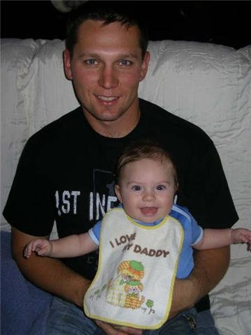

Hello, I am currently persuing a Bachelors in Information Technology and Management from Illinois Institute of Technology in Chicago, IL
I was born and raised in the Southside of Chicago in the 1980s. I grew up under the flight path for Midway airport and attended a Catholic grade school. It is where I began my journey with the Boy Scouts of America that led to me becoming an Eagle Scout and currently a Scoutmaster.
I moved to the southwest suburbs of Chicago when I was 15. I eventually went to the University of Illinois - Urbana Champaign to study Economics. I took a year off to join the Illinois Army National Guard as a Medic and shotly after met my future wife. 9/11 occured shortly after my return to school.
After 9/11, I decided to leave school to become a Firefighter/Paramedic. During my time as a paramedic I was able to deliver a baby in the ambulance and two in a hospital.
Shortly after the birth of my first child in 2008, I deployed to Afghanistan with the Illinois National Guard as a Combat Advisor/Combat Medic. There I trained, mentored, and advised the Afghanistan National Army medics and soldiers.
Upon returning from Afghanistan, I had my second child, began working part time as a Financial Advisor on my days off from the fire house, and then had my third child.
After over a decade in the military and fire service, my body could no longer do it. After some time to think about what to do I decided to return to school.
This has led me to today where I am building this site.